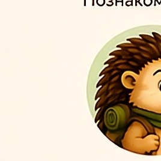
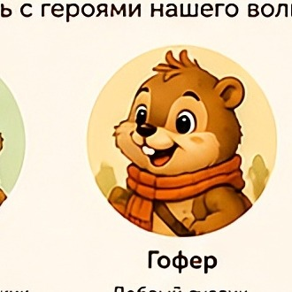

KirpiGoferмир добрых приключений«Мир Кирпи и Гофера» — это уютное и безопасное пространство, где ребёнок учится доброте, дружбе и заботе вместе с любимыми героями.
Никакой рекламы, чужих ссылок и пугающего контента. Только добрые истории и спокойные краски.
Сказки расширяют словарный запас и воображение, а герои на своём примере учат сопереживанию.
«Найди пару» тренирует память и внимание, «Поймай друга» — реакцию. Всё в добром, неагрессивном формате.
Раскраски с тремя уровнями сложности развивают мелкую моторику и чувство цвета — для самых маленьких и тех, кто постарше.
Можно слушать истории — отдых для детских глаз и удобно перед сном.
Каждая история — про дружбу, честность, помощь и доброту. То, что важно проживать вместе.
Нет. Все истории, игры и раскраски доступны сразу, без аккаунта.
Да, базовые материалы доступны бесплатно. О любых новинках будем сообщать заранее.
Да. Сайт адаптируется под экран, а в раскрасках и играх можно рисовать и нажимать пальцем.
Нет. Мы намеренно держим пространство чистым и спокойным для детей.